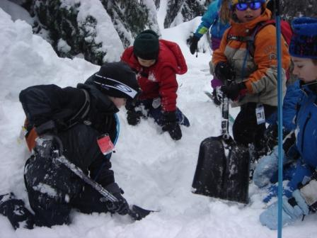
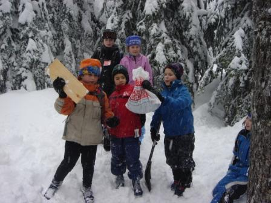
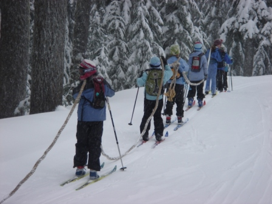
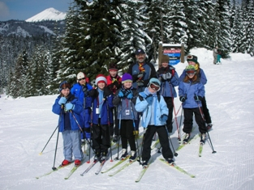
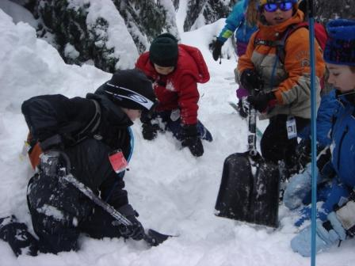
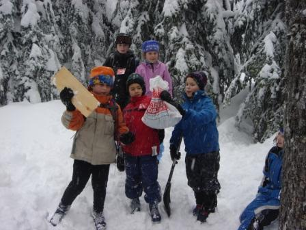
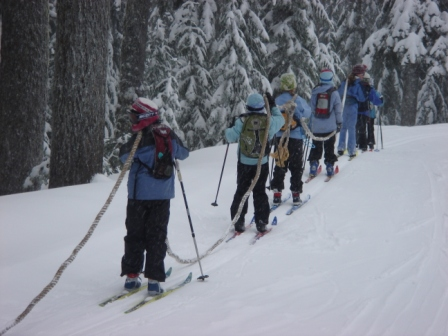
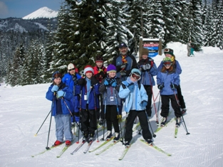

The Junior Nordic Program (JNP) is a cross-country skiing program for kids and teens age 4-18. It is operated out of the Summit Nordic Center at Snoqualmie
Pass, WA. The JNP was started in the 1990s and has been teaching kids and teens freeheel skiing for 20+ years!
Treasure Trails session #2 FEB 11, 25; MAR 4, 11 2023
Little Nords, Freeheelers: JAN 7, 21, 28; FEB 4, 11, 25; MAR 4, 11 2023
NO LESSONS MLK (Jan 15) OR PRESIDENTS (Feb 19) WEEKENDS
Junior Nordic Program Age 7-18
JNP Parents
   
JNP 2023 Dates
Saturdays 9AM to 1PM. Treasure Trails session #1 JAN 7, 21, 28; FEB 4 2023Treasure Trails session #2 FEB 11, 25; MAR 4, 11 2023
Little Nords, Freeheelers: JAN 7, 21, 28; FEB 4, 11, 25; MAR 4, 11 2023
NO LESSONS MLK (Jan 15) OR PRESIDENTS (Feb 19) WEEKENDS
Registration Links
Treasure Trails Age 4-6Junior Nordic Program Age 7-18
JNP Parents
(What skis to get? Click FAQ to left and scroll towards the bottom)
   